Biochimia Structurală
Aminoacizi
Compus organic în care un atom de carbon este legat de o grupare amino (-NH 2), o grupare carboxil (-COOH), un atom de hidrogen (-H) și o grupare organică (numită R). Din aceste combinații rezultă acizi carboxilici și amine. Proprietățile fizice și chimice rezultă din proprietățile radicalului R, în special tendința de a interacționa cu apa și încărcătura electrică a acestuia. Din cei 100 de aminoacizi, doar 20 intră în structura proteinelor prezente în toate organismele vii. Organismul uman poate sintetiza prin conversie internă doar 10 dintre aceștia, transformând un aminoacid în altul, sau prin transformarea moleculelor produse în faza intermediară a metabolismului. (aminoacizi esențiali: arginina, histidina, izoleucina, leucina, listina, metionina, fenilalanina, treonina, tritofan și valina).
Formula generală:
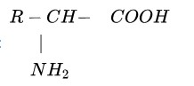
Ca și elemente de formare a proteinelor, aminoacizii au câteva funcții de bază:
- reprezintă o mare parte din țesuturile, celulele și mușchii din organism;
- susțin dezvoltarea și vindecarea țesuturilor și a celulelor;
- îmbunătățesc circulația sanguină;
- produc enzime pentru o digestie optimă;
- sintetizează hormoni esențiali în reproducere;
- contribuie la furnizarea energiei.
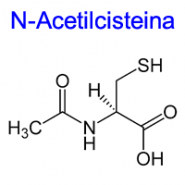N-ACETILCISTEINA (C 5H 9NO 3S) este un amino acid pus în legatură cu bolile de inimă. Consumul de cisteină în exces cauzează formarea unor chimicale care alertează organismul că nu primește suficient oxigen. Reacția corpului va fi de a-și îngusta arterele și de a crește tensiunea din plămâni, lucru care conduce la inflamarea inimii.
Dacă dieta noastră nu aduce o cantitate suficientă de aminoacizi în organism, acesta isi va furniza singur proteinele necesare pentru functionare. Câteva dintre efectele unei diete deficitare în aminoacizi includ nivel scăzut de energie, insomnii, oboseală cronică, afecțiuni digestive, căderea părului, apariția afecțiunilor dermatologice, dar și schimbări de natură psihologică precum nervozitate, depresie, anxietate, schimbări de dispoziție, iritabilitate, scăderea capacității de concentrare.
Acizi nucleici
Oricare dintre compușii chimici care alcătuiesc materialul genetic al celulelor vii.
Ei dirijează procesul de sinteză a proteinelor, reglând întreaga activitate celulară. Transmiterea lor de la o generație la alta reprezintă fundamentul eredității.
Cele 2 tipuri principale de acizi nucleici sunt ARN și ADN
au compoziție chimică asemănătoare, dar diferă prin structură și funcții.
(adenină, guanină, citozină și timină – ADN; adenină, guanină, citozină și uracil – ARN).
ADN
Unul din cele 2 tipuri de acid nucleic, compus organic complex care se găsește în toate celulele vii, precum și în multe virusuri. Reprezintă substanța biochimică din care sunt alcătuite genele. Structura sa, două spirale răsucite una în jurul celeilalte într-o structură elicoidală dublă, semănând cu o scară răsucită, a fost descrisă prima dată de către Francis Crick și James D. Watson (1953). Fiecare spirală reprezintă un lanț lung (polimer) de nucleotide care se repetă: adenina (A), guanina (G), citozina (C) și timina (T). Cele două spirale conțin informații complementare: A formează legături de hidrogen doar cu T; C doar cu G. Când ADN-ul este copiat în celulă, lanțurile se separă și fiecare servește drept tipar pentru constituirea unui nou lanț complementar, acesta reprezentând mecanismul – cheie al eredității. ADN-ul din celule este organizat în complexe dense de proteină-ADN, numite cromozomi. La eucariote, acestea se găsesc în nucleu, dar ADN-ul se găsește și în mitocondrii și în cloroplaste. Procariotele au un singur cromozom circular, aflat în citoplasmă. Unele procariote și doar puține eucariote au ADN-ul situat în afara cromozomilor, și anume în plasmide.
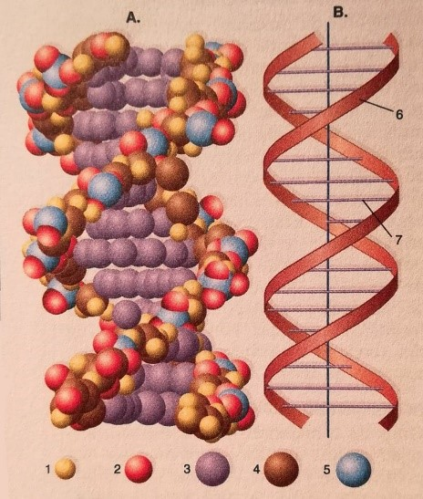
ARN / acid ribonucleic
Unul dintre cele două tipuri principale de acid nucleic, cu funcție principală în sinteza proteinelor din toate celulele vii și cu funcție de purtător al informației genetice la virusurile lipsite de ADN. Ca și ADN-ul, este alcătuit dintr-un lanț de nucleotide legate între ele, dar, exceptând anumite virusuri, acest lanț este unic și conține uracil (U), în timp ce ADN-ul conține timină. ARN-ul mesager (ARNm), copiat după una dintre cele două catene de ADN care acționează ca model, poartă mesajul codului genetic de la ADN (din cromozomi) la locul sintezei proteice (pe ribozomi). ARN-ul ribozomial (ARNr), ca element constituent al blocurilor de ribozomi, participă la sinteza proteică. ARN-ul de transfer (ARNt), cel mai mic tip de ARN, are mai puțin de o sută de nucleotide (ARNm și ARNr conținând mii). Fiecare triplet nucleotidic de pe ARNm precizează care aminoacid urmează să fie încorporat în proteina sintetizată. Molecula de ARNt prezintă pe lanțul său un triplet ale cărui trei baze consecutive, complementare cu cele de pe ARNm, îi permit să aducă aminoacidul respectiv la locul de sinteză al proteinei, pentru a fi inclus în structura acesteia. Există și alte tipuri minore de ARN; cel puțin unele dintre acestea au funcție de catalizatori (ribozimele), funcție care, mult timp, a fost atribuită doar proteinelor.
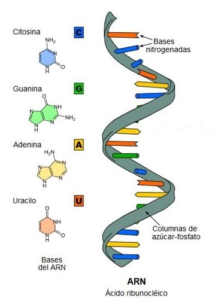Proteine
Compus organic, polimer complex al aminoacizilor, implicat în majoritatea aspectelor legate de fiziologia și biochimia organismelor vii. Pot conține 20 de aminoacizi, în lanțuri de la sute până la mii de unități. O proteină are 3 mari niveluri de structură: primar ( un șir de aminoacizi), determinat de gene; secundar (formă geometrică, deseori spiralată), determinat de unghiurile legăturilor covalente dintre ele (legături dintre peptide) și aminoacizi; terțiar (formă buclată și pliată), determinat de legăturile de hidrogen dintre lanțurile laterale de aminoacizi. Proteinele sunt un nutrient esențial pentru om, obținut atât pentru din alimente vegetale, cât și din cele animale. Sunt folosite mai ales în produsele alimentare, sunt utilizate, de asemenea, în adezivi, plastice și fibre.
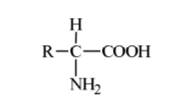Riscuri ale deficitului de proteine Modificări care pot apărea în organism:
- calculi biliari;
- artrita;
- tulburări cardiace;
- deteriorarea mușchilor;
- disfuncții ale organelor;
- deces.
Lipsa proteinelor din organism este considerată una dintre cauzele majore care favorizează apariția următoarelor afecțiuni: boli cardiovasculare, cancer de colon, cancer mamar și osteoporoză.
Lipsa proteinelor provoacă și numeroase alte tulburări, cum ar fi: pierderea în greutate, slăbiciunea, contracția țesutului muscular și edem, anemie, hiperpigmentarea pielii, ritm cardiac și metabolism scăzut, afecțiuni hepatice, etc.
Exces
Atunci când consumi proteine în exces îți intoxici sistemul nervos, ficatul, rinichii, colonul. Efectele negative nu se văd a doua zi, ci după luni sau ani.
Te-ai plictisit? Uite aici o glumă, să-ți redeschidem apetitul pentru chimie și mai ales pentru biochimie
Ce i-a spus nevasta lui Mendeelev acestuia în ziua nunții?Simt o chimie între noi!
Să revenim la ale noastre acum!
Glucide (carbohidrați)
Clasă de compuși naturali organici foarte vastă și răspândită, care include zaharuri, amidon și celuloză. Aceștia sunt, în general, clasificați drept monozaharide (zaharuri simple, de exemplu glucoză, fructoză), dizaharide (zaharuri cu două unități, de exemplu sucroză, lactoză), oligozaharide (3-10 zaharide) și polizaharide (molecule mari cu până la 10000 de unități, incluzând celuloză, amidon și glicogen). Plantele verzi produc glucide prin fotosinteză, iar la majoritatea animalelor glucidele sunt un rezervor de energie ușor accesibil și oxidarea glucozei în țesuturi produce energia necesară metabolismului. Carența de carbohidrați poate duce la hipoglicemie sau chiar atrofie musculară pe când excesul de carbohidrați duce inițial la o stare de energie apoi corpul declanșează stocarea și nivelul energetic scade rapid (starea de somnolență după consumul de dulciuri). Mulți compensează asta cu energizante, în principal cofeina, care forțează corpul să producă energie. Excesul cronic duce la boli degenerative, diabet, boli cardiovasculare, autoimune, inflamatorii. Carbohidrații ar trebui să reprezinte 47-50% din aportul total de calorii într-o zi, aceasta fiind cantitatea zilnică necesară organelor a căror funcționare depinde exclusiv de glucoză, cum este situația creierului.
LACTOZA (C 12H 22O 11) – Dizaharidă care se găsește în lapte. Multe glucide au formula chimică generală Cn(H 2O)n.
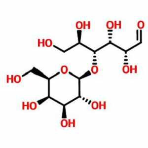Monoglucidele
Monoglucidele (monozaharidele sau ozele) sunt combinaţii naturale polihidroxicarbonilice, mai exact polihidroxialdehide sau polixidroxicetone cu lanţ C-C neîntrerupt. După numărul atomilor de carbon din moleculă monoglucidele pot fi trioze, tetroze, pentoze, hexoze, heptoze etc. După natura grupării carbonilice monoglucidele pot fi:
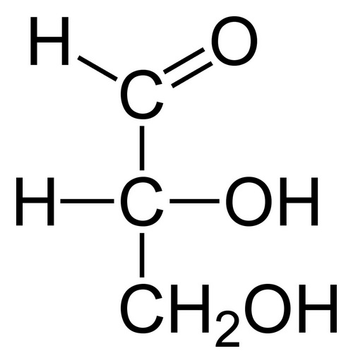- aldoze – monoglucide care au în molecula lor grupa aldehidică;
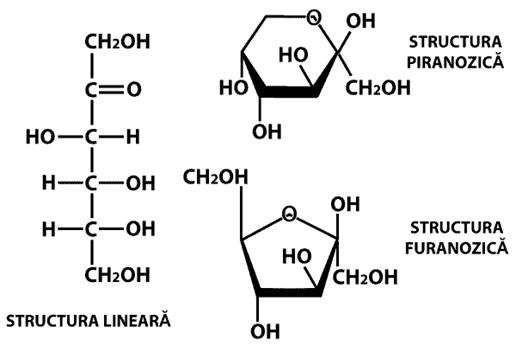- cetoze - monoglucide care au în molecula lor grupa cetonică.
Lipide
Denumire comună pentru mai multe tipuri de compuși organici grași și insolubili în apă, prezenți în toate organismele vii.
Una dintre cele 3 mari clase de substanțe chimice din compoziția alimentelor și a celulelor vii, lipidele conțin de două ori mai multă energie decât celelalte 2 clase, proteinele și glucidele.
Ele includ grăsimi și uleiuri comestibile.
Caracteristica definitorie unei substanțe lipidice este insolubilitatea în apă, colesterolul și steroizii înrudiți, carotenoidele, prostaglandinele și diferiți alți compuși pot fi, de asemenea, clasificați drept lipide. Acestea se găsesc în produsele lactate, carne, mezeluri, pește și grăsimile de origine vegetală se găsesc în ulei, margarină și lecitină (legitina din soia). În exces, grăsimile alimentare, provoacă obezitate, hipotiroidie, hipercolesterolemie, hipertrigliceridemie. Carența de lipide duce, însă, la dificultatea de absorbție a vitaminelor, depresie (omega 3 și omega 6, risc de schizofrenie), risc crescut de cancer (cancer colon din cauza lipsă omega 3), nivel crescut de colesterol și boli de inimă.
Din punct de vedere structural, lipidele se clasifică în două mari grupe care la rândul lor se împart în alte subgrupe: lipide simple (ceride, acilgliceroli, steride şi etolide) şi lipide complexe (fosfolipide şi glicolipide). La rândul lor, acilglicerolii pot fi mono-, di- şi triacilgliceroli, fosfolipidele se împart în glicerofosfatide şi sfingofosfatide, iar glicolipidele pot fi glicosfingolipide (cerebrozide şi gangliozide) şi glicozil-gliceride).
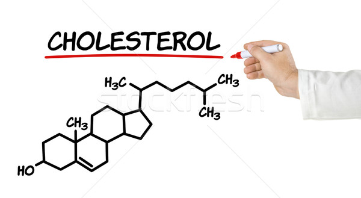COLESTEROL (C 27H 46O) De obicei au formula CH 3-(CH 2)n-COOH *la acizi grași saturați*
În organismele vii, lipidele îndeplinesc mai multe funcţii:
– rol energetic datorită energiei ce rezultă în urma degradării lor catabolice, această energie, acumulată sub forma legăturilor macroergice ale moleculelor de ATP, putând fi utilizată de către organisme în procesele de biosinteză şi în efortul fizic şi intelectul;
– rol de rezervă îndeplinit de lipidele localizate în ţesuturile adipoase;
– rol plastic jucat de lipidele citoplasmatice care sunt, în general, lipide complexe care intră în compoziţia citoplasmei şi a tuturor membranelor biologice. Dacă lipidele de rezervă sunt consumate în caz de subnutriţie, lipidele plastice reprezintă elementul constant, concentraţia lor rămânând nemodificată.
– rolul de material izolant jucat de lipidele localizate în ţesuturile subcutanate sau în jurul diferitelor organe unde asigură protecţia mecanică şi termică.
Enzimele
Substanță cu rol de catalizator, aflată în organismele vii, ce reglează viteza cu care se produc reacțiile chimice, fără a perturba procesul. .
Enzimele catalizează toate reacțiile metabolismului celular; printre acestea se numără asimilarea hranei – în care molecule nutritive sunt descompuse în molecule mai mici - , conservarea și transformarea energiei chimice, respectiv geneza celulară. Aproape toate enzimele sunt proteine. O enzimă își încetează activitatea când configurația este distrusă. Enzimele se clasifică în funcție de reacțiile pe care le catalizează: (1) oxidoreducere; (2) transfer al unui grup chimic; (3) hidroliză; (4) îndepărtare sau adăugare a unui grup chimic; (5) izomerizare și (6) unire a unităților de substrat (polimerizare). Fermentarea vinului, dospirea aluatului, covăsirea laptelui și fermentația berii sunt exemple de reacții enzimatice. Enzimele se folosesc în medicină pentru suprimarea unor agenți patogeni letali, accelerarea vindecării unor răni și diagnosticarea unor boli.
- Stimulează procesul de digestie
- Diminuează senzația de balonare și prea-plin
- Combate efectele exceselor alimentare
- Susține refacerea florei intestinale de după episodul digestiv
- Protejează sistemul digestiv împotriva acțiunii factorilor patogeni (care provoacă boli)
- Ajută metabolizarea anumitor substanțe
Enzimele monocomponente– sunt proteine simple (holoproteine) cu moleculele alcătuite numai din radicali de aminoacizi legaţi între ei prin legături peptidice, iar enzimele bicomponente fac parte din clasa proteinelor complexe (heteroproteine) şi au molecula alcătuită dintr-o componentă proteinică numită apoenzimă şi o grupare de natură neproteică numită cofactor enzimatic. Cofactorii legaţi puternic cu apoenzimele lor se numesc grupări prostetice iar cei uşor disociabili se numesc coenzime. Acţiunea catalitică a enzimelor este condiţionată de existenţa în moleculele lor a unor regiuni distincte, denumite situsuri (centre) active sau catalitice.
Coenzime:
În funcţie de natura lor chimică se împart în patru clase:
– coenzime cu structură alifatică. Din această grupă fac parte acidul lipoic, glutationul şi acidul ascorbic (vit. C).
– coenzime cu structură aromatică. Din această categorie fac parte ubichinonele, compuşi naturali ce conţin în molecula lor un inel derivat de la hidrochinonă şi mai multe unităţi izoprenice:
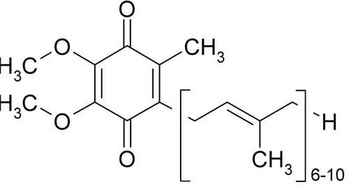UBICHINONA – COENZIMA Q10 (C59H90O4)
– coenzime cu structură heterociclică.
a) coenzime derivate de la tiamină
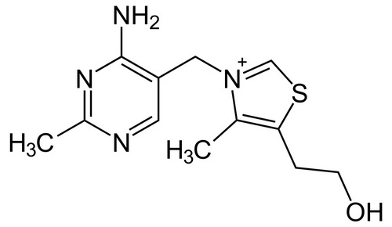CLORHIDRAT DE TIAMINĂ
b) coenzime derivate de la biotină
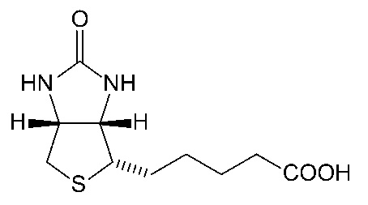BIOCITINĂ
c) coenzime derivate de la piridoxină
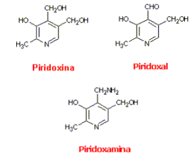
d) coenzime derivate de la acidul folic
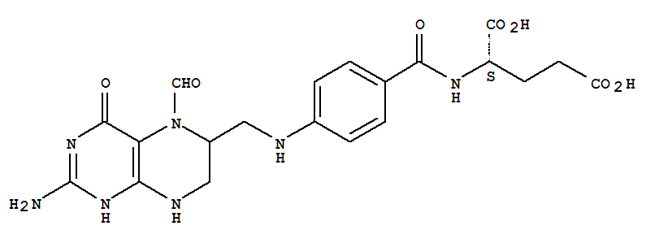
ACID FORMIL-TETRAHIDROFOLIC
– coenzime cu structură nucleozidică. Există mai multe coenzime de natură nucleozidică şi nucleotidică, cele mai importante fiind următoarele:
a) adenozintrifosfatul – este principalul compus macroergic al organismelor vii şi, în acelaşi timp, principalul transportor de grupări fosfat.
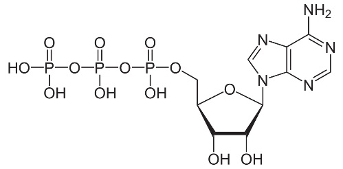
b) coenzima A – este un agent de activare şi transport a radicalului acetil şi în general a radicalilor acil.
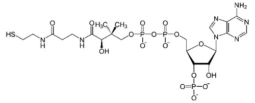
c) coenzime piridin-nucleotidice - majoritatea organismelor animale precum şi numeroase microorganisme necesită un aport zilnic de acid nicotinic sau nicotinamidă (vit. PP).
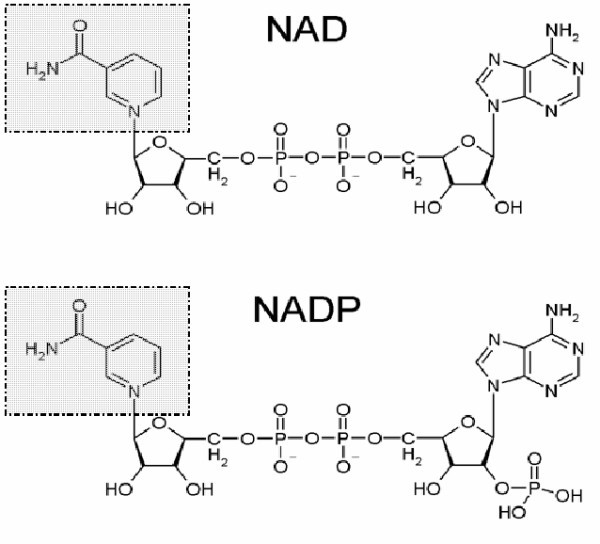
d) coenzime flavinice: flavinmononucleotid (FMN) şi flavinadenindinucleotid (FAD)
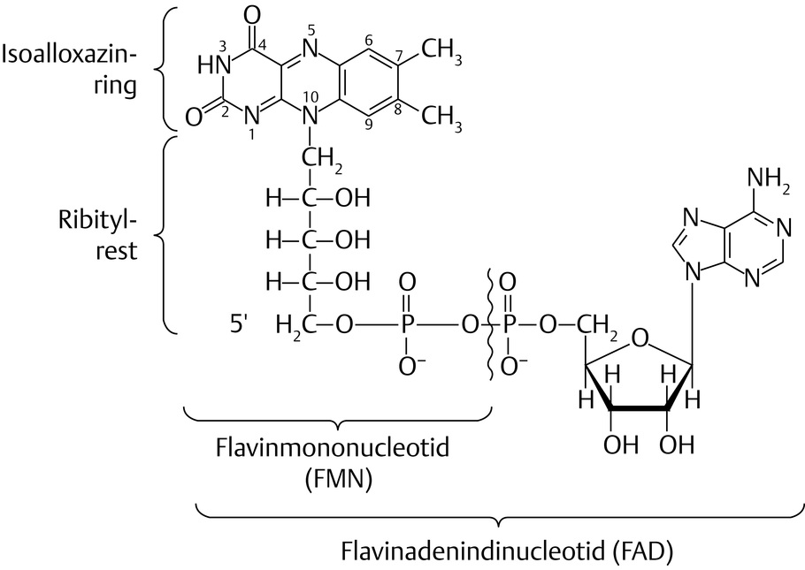